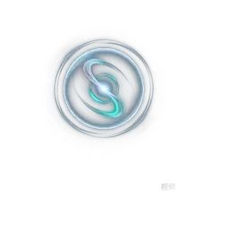
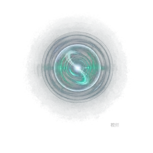
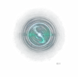

发光能量核心形态。全部资产为透明背景，可直接叠加在任意 UI 底色上； 动态版本为无缝循环（首尾接缝差异小于动画自身的帧间变化）。

主体经归一化处理，占画布约 66%，因此无论方形还是圆形裁切都不会切到轮廓边缘。 五个状态的视觉大小完全一致，切换时不会出现“忽大忽小”。
静态图用于低性能场景或不希望动画的时刻（如下载中、页面失焦）。动画则可挂在语音事件上：
助手说话时切到 speaking，其余时间回落到 idle。


<!-- 1. 动态头像：加 autoplay 无关的 img 即可，WebP 原生循环 -->
<img src="anim/apple-idle-128.webp" style="width:64px;height:64px;border-radius:50%">
<!-- 2. 按状态切换 -->
<img id="avatar" src="png/apple-idle-128.png" style="width:64px;height:64px">
<script>
const el = document.getElementById('avatar');
// 助手说话 -> speaking；回答结束 -> idle
el.src = speaking ? 'anim/apple-speaking-128.webp' : 'anim/apple-idle-128.webp';
</script>
<!-- 3. 需要更高画质时用视频格式（含 VP9 透明 alpha） -->
<video autoplay muted loop playsinline
src="anim/apple-idle-512.webm"
style="width:180px;height:180px"></video>
<!-- 4. 若UI是深色底，静态PNG可直接1:1使用；浅色底同样可用（已抠透明） -->| 类别 | 文件 | 说明 |
|---|---|---|
| 静态 PNG | png/apple-{state}-{size}.png |
state = idle / listening / speaking / thinking / happy；size = 1024·512·256·128·64·40 |
| 动画 WebP | anim/apple-{idle|speaking}-{256|128|64}.webp |
推荐用于头像：体积小、原生透明、自动循环 |
| 动画 WebM | anim/apple-{idle|speaking}-512.webm |
VP9 + alpha，用于大尺寸展示或视频式集成 |
透明背景无缝循环主体占比统一 66% 已去水印15fps / 5s
建议：≤64px 场景用 128px 资源由浏览器缩放，比直接用 64px 更清晰且省一个文件。